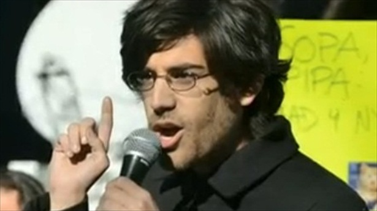

Aaron Swartz
Informaticien de génie
Aaron Hillel Swartz (né le 8 novembre 1986 à Chicago, mort le 11 janvier 2013 à New York1) était un informaticien, écrivain, meneur politique et hacktiviste américain.
Fervent partisan de la liberté numérique, il consacra sa vie à la défense de la « culture libre », convaincu que l'accès à la connaissance étant un moyen d'émancipation et de justice.
Aaron Swartz a eu un rôle décisif dans l'essor de l'Internet, tant sur le plan technique (notamment en développant le format de flux RSS2 et en participant à l'invention des licences Creative Commons3 (CC) que sur le plan de la gouvernance juridique et politique en manifestant contre le projet de la loi SOPA (Stop Online Piracy Act).
Écrivain prolifique sous différentes formes (blogs, pamphlets politiques, textes de conférences), l'ouvrage Celui qui pourrait changer le monde (parution en français en 2017) rassemble ses principaux textes qui reflètent son engagement intellectuel sur des enjeux sociétaux dont le droit d'auteur, la liberté d'accès des connaissances et des savoirs dont les publications scientifiques ou la transparence en politique.
Il a étendu ses réflexions dans le domaine de la sociologie, l'éducation civique et politique.
Il se suicide le 11 janvier 2013 à l'âge de 26 ans1 dans son appartement. Son procès fédéral en lien avec des accusations de fraude électronique devait débuter le mois suivant.
Activités Idéologiques et millitantes

Mouvement Demand Progress
En 2009, Il fonde le mouvement Demand Progress avec David Segal. Le collectif s'implique dans plusieurs campagnes : refus de la mise hors-la-loi de Wikileaks, soutien de l'action des lanceurs d'alerte, demande d'abrogation du Patriot Act, appel à réduire les nouvelles et vastes prérogatives de l'exécutif américain sur Internet, opposition à la censure sur Facebook et contre le projet de loi SOPA27.
Contributeur Wikipédia
Aaron Swartz était un wikipédien actif. En 2006, il s'est présenté à l'élection du conseil d'administration de la Wikimedia Foundation et a publié sur son blog un texte intitulé « Qui écrit Wikipédia ? », dont la conclusion résumait en quelque sorte sa profession de foi. Réfutant rigoureusement l'analyse de Jimmy Wales selon laquelle l'essentiel de l'encyclopédie est écrite par une minorité d'experts très productifs, les « insiders », tandis que la majorité des autres intervenants n'effectuent que des modifications mineures et ponctuelles.
SecureDrop
Son dernier projet de développement est la plate-forme SecureDrop permettant aux lanceurs d’alerte de fournir informations et documents aux journalistes de façon sécurisée, utilisée par des médias comme le New Yorker, le Washington Post ou encore le Guardian. Il collaborait sur le code informatique avec Kevin Poulsen. Après sa disparition, c'est la FPF (Free Press Foundation) qui a repris le projet avec l'aide de James Dolan, rebaptisant le projet initial Deaddrop en projet SecureDrop.
Affaire JSTOR
Le 19 juillet 2011, il est accusé d'avoir téléchargé 4,8 millions d'articles scientifiques disponibles sur le site de JSTOR (soit la quasi-totalité du catalogue). L'organisation JSTOR n'a pas pris l'initiative d'une telle démarche judiciaire, c'est le procureur des États-Unis Carmen Ortiz qui a engagé des poursuites contre Aaron Swartz dans le but de le faire arrêter.
D'après la plainte, c'est entre le 24 septembre 2010 et le 6 janvier 2011 que Swartz utilise plusieurs méthodes pour récupérer les documents. Il entre notamment dans la salle de câblage informatique du MIT. La quantité de téléchargements aurait fait s'effondrer plusieurs serveurs de JSTOR, conduisant à un blocage de l'accès des utilisateurs du MIT au réseau.